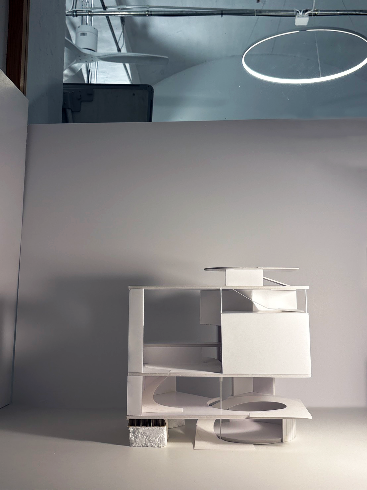

Aiko Hayashi
Architecture Student
I am an undergraduate architecture student at the Georgia Institute of Technology, based between Atlanta and Tokyo. My interests span urban science, urban homogenization, architectural theory, and design.

News
-
2026.03
Hackathon
Winner — ImmerseGT with Tanix XRTrack
Award
-
2023.03
1st Prize — Mynavi Career Koshien 2022
-
2021.08
Gold Medal — DOCOMOMO Japan
Certificate
-
2024.07
Yanai Tadashi Foundation Scholar
-
2023.08
University of Tokyo Global Science Campus
-
2023.08
Selected for 100BANCH — emobby
Contact
- Email aiko.hayashi2005@gmail.com
- GitHub github.com/Annetotoro
- CV Download